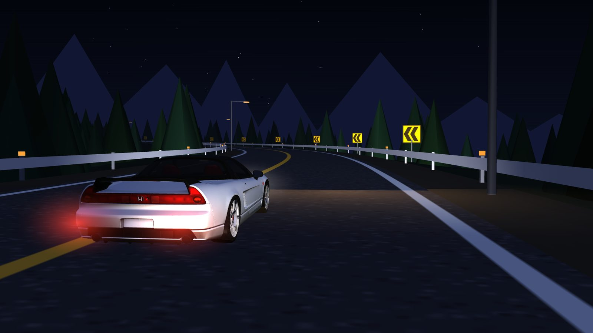
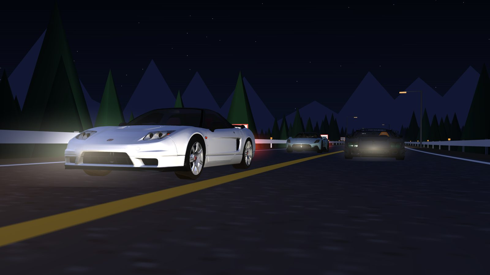

コース10月17日・ハンガロリンク T14
中心線がピット入口の側道を通っていた
- 起きたこと
- 最終コーナー付近だけ、コースの中心線が本線ではなく側道をなぞっていました。
- 対策
- タイヤ跡のある路面に付け替えました。翌日、中心線から本コースの路面が外れる区間を探す検査
route_audit.pyを作り、全15コースで確かめました。
月見坂ナイトラン開発記
ゲームで遊ぶ（新しいタブで開きます）2026年10月15日〜10月21日の記録
月見坂ナイトランは、ブラウザで遊べる3Dのレースゲームです。ゲームは1つの HTML ファイルでできています。このページは、初回公開から7日間・51回のコミットで、何を足し、どこでつまずいたかをまとめた記録です。

左が初回公開（10月15日）の時点、右が10月21日の時点です。
ゲームは three.js（r128）で作っています。CSS も物理計算も、19本のコースのデータも、1枚の HTML に入っています。
Claude のアーティファクトで配信できるファイルは、json・txt・png・jpg だけです。車やコースの3Dモデル（GLB）はそのままでは置けません。
そこで、GLB のデータを幅4096のグレースケール画像の画素として並べ、PNG にしています。ページを開くと、画像の中身を展開して元のデータに戻します。データは1バイトも変わりません。BGM と信号音の mp3 も同じ方法です。
同じファイルを3か所で公開しています。更新のしかたは、公開先ごとに違います。
| 公開先 | 更新のしかた | ランキング |
|---|---|---|
| Vercel 版 | main に push するたびに自動で更新 | 端末ごと |
| Claude 版 | チャットから再公開。レース中の人がいれば、終わるまで待つ | 全員で共有 |
| Netlify 版 | コミットに [deploy] があるときだけ更新。無料枠は月20回まで | 端末ごと |
Netlify は10月17日に無料枠を使い切り、更新が止まりました。そのため、10月21日から Vercel でも公開しています。
git に残っているコミットを、日ごとにまとめました。時刻は日本時間です。関連するコミットは1行にまとめています。
不具合が起きたときに、何を直して、そのあと何を決めたかです。
コース10月17日・ハンガロリンク T14
route_audit.py を作り、全15コースで確かめました。修正10月20日 18:51〜19:00
hoodPlane の宣言がコメント行に入ってしまいました。走り10月17日 11:57〜12:09
音10月17日 13:59〜14:10
みんなで10月18日・コースレコードの通知
公開10月17日・10月21日
[deploy] があるときだけ公開するようにしました。10月21日からは、回数の上限がない Vercel でも公開しています。実在のサーキットの3Dモデルから、走れる道幅と壁の位置を割り出します。いちばん気をつけているのは、見た目は道路なのに壁がある所や、ガイドが道からずれる所を作らないことです。
上から見た画像を出し、路面・縁石・タイヤ跡・芝・砂のマテリアルを決めます。
survey.py
タイヤ跡をたどって1周の輪を作ります。途切れる所は経由点でつなぎます。
groove_loop.py
白線の外まで舗装が広い所は、中央に寄せる上限を付けます。
fit_band.py
ピットレーンとの分離線と、曲がり具合による道幅の上限を決めます。
band_limit.py
時計回りに揃え、スタート地点を先頭にします。
orient_start.py
古い路面の上に傾いた路面が重なるバンクは、上の面を使います。
route_profile.py
三角形の数と画像の大きさを減らし、PNG に入れます。
optimize2.py → pack_png.py
空・霧・地面の色と、モデルの作者とライセンスを書きます。
XXX_DATA / COURSES
道幅がすべて路面の上にあるか、道の中に壁がないか、中心線が側道を通っていないかを確かめます。1周分の上空の画像は、すべて目で見ます。
final_check.py / wall_check.py / route_audit.py
全コースが組み上がるか、全車の0-100km/h がカタログ値に合うかを確かめます。
node tests/run.js

31台の車と19のコースを、ブラウザだけで遊べます。天候、時間帯、タイヤの温度、チーム無線、ほかのプレイヤーのゴーストとの対戦があります。
最新版。記録は端末ごとに保存されます。
全員のランキングとゴーストを共有します。
10月17日の版。無料枠が戻るまで更新が止まっています。